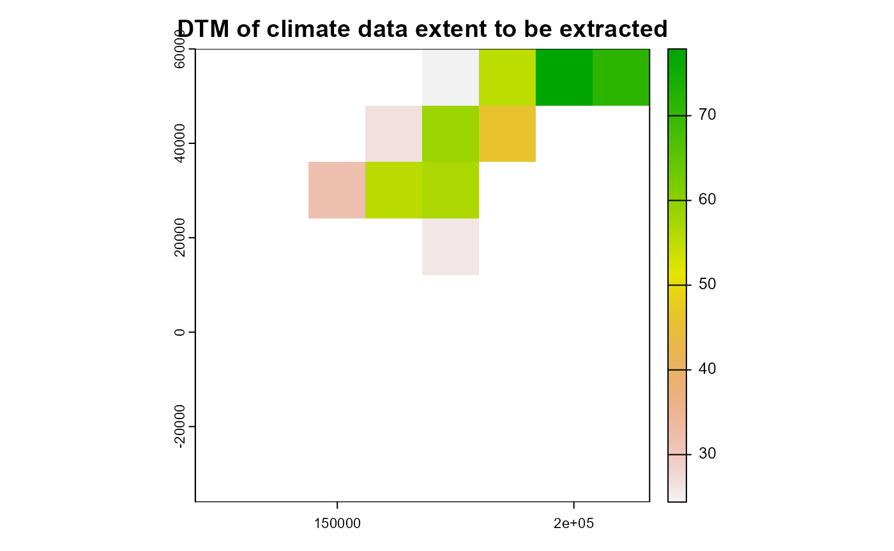
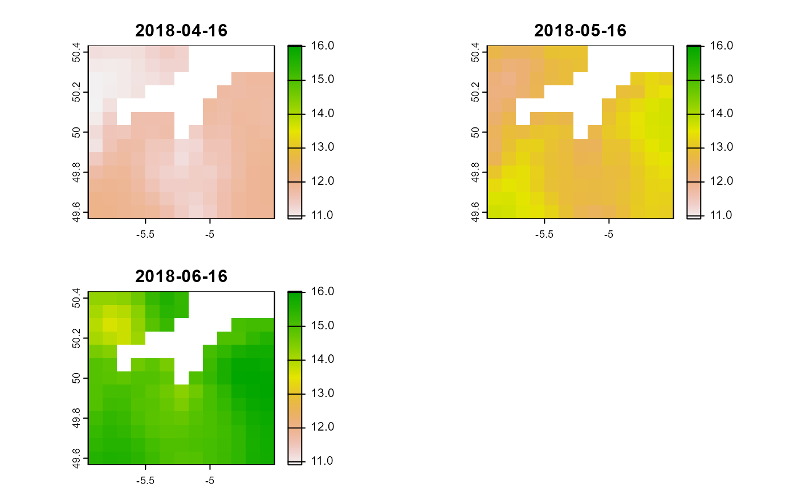
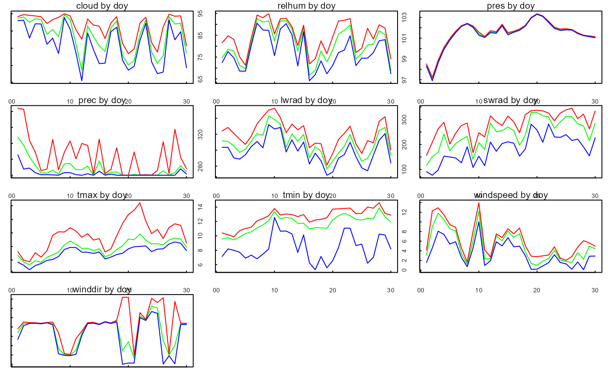
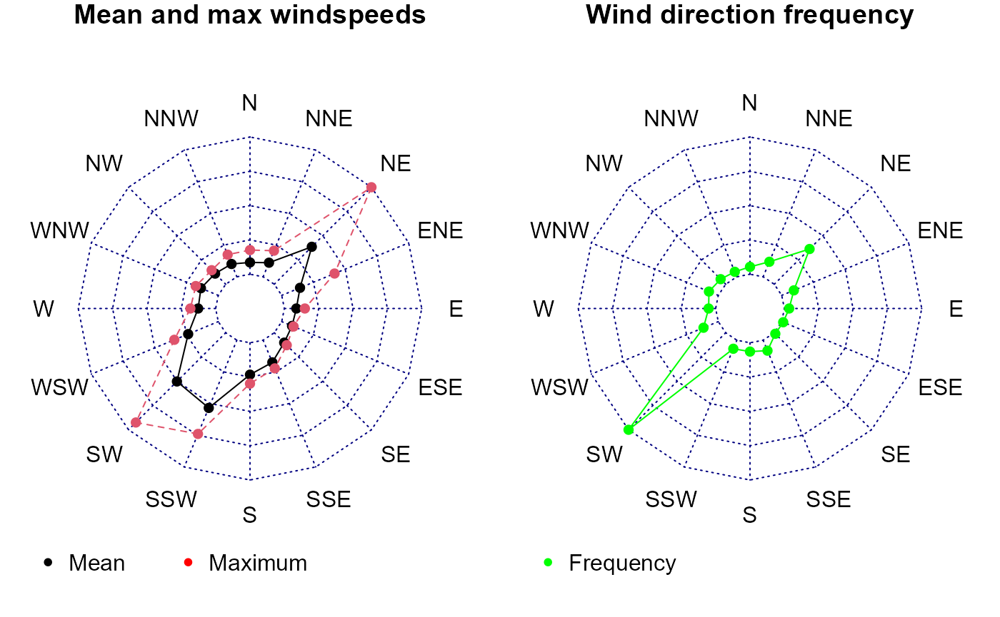

2. Data pre-processing
Source:vignettes/articles/mesoclim_2_preparedata.Rmd
mesoclim_2_preparedata.Rmd
library(lubridate)
#>
#> Attaching package: 'lubridate'
#> The following objects are masked from 'package:base':
#>
#> date, intersect, setdiff, union
library(terra)
#> terra 1.7.71
library(mesoclim)
#> Warning: replacing previous import 'lubridate::union' by 'raster::union' when
#> loading 'mesoclim'
#> Warning: replacing previous import 'lubridate::intersect' by
#> 'raster::intersect' when loading 'mesoclim'
#> Warning: replacing previous import 'magrittr::extract' by 'raster::extract'
#> when loading 'mesoclim'
#> Warning: replacing previous import 'lubridate::origin' by 'raster::origin' when
#> loading 'mesoclim'
#> Warning: replacing previous import 'fields::describe' by 'terra::describe' when
#> loading 'mesoclim'
#> Warning: replacing previous import 'magrittr::inset' by 'terra::inset' when
#> loading 'mesoclim'2 Preprocessing coarse resolution climate data
Defining area of interest
Unless we are wanting to analyse the whole area covered by downloaded climate data, it is best to define a broad area of interest to restrict data size and processing times. The area of interest is used to crop a coarse DTM of the same projection and resolution as the climate data to provide a template for data processing.
# dir holding already downloaded climate
dir_ukcp<-system.file('extdata/ukcp18rcm',package='mesoclim')
# dir holding sea temperature data
dir_sst<-system.file('extdata/ukcp18sst',package='mesoclim')
# Load coarse resolution UKCP18rcm DTM of UK
dtmc<-terra::rast(file.path(dir_ukcp,'orog_land-rcm_uk_12km_osgb.nc'))
# Load DTM of general downscale area (including wider area for capturingwind/caosatal effects)
dtmm<-terra::rast(system.file('extdata/dtms/dtmm.tif',package='mesoclim'))
# Crop coarse DTM to an area of interest
dtmc<-terra::crop(dtmc,dtmm)
plot(dtmc,main='DTM of climate data extent to be extracted')
Creation of standard inputs for downscaling
Different sources of climate and ancillary data can provide different
variables using different SI units, in different formats and using
different file naming conventions. Therefore, mesoclim
provides several functions to convert and check source data into
standard inputs for subsequent downscaling. Here we look at UKCP18
regional data as an example.
UKCP18 climate preprocessing
UKCP18 data preprocessing requires the conversion of net to downward short and longwave radiation. The conversion of shortwave radiation is calculated using an estimate of albedo at the same resolution as the climate data. Albedo data can either be provided or when not, constant land/sea albedo values are used.
Outputs are a list of climate variables which can be written to file
using the function write_climdata().
# Preprocess UKCP18 data using constant albedo land / sea values
collection<-'land-rcm'
domain<-'uk'
member<-'01'
rcp<-'rcp85'
startdate<-as.POSIXlt('2018/05/01')
enddate<-as.POSIXlt('2018/05/30')
# Processes using already downloaded ukcp18rcm files in dir_data
t0<-now()
ukcp18rcm<-ukcp18toclimarray(dir_ukcp, dtmc, startdate, enddate,
collection, domain, member)
#> Loading clt_rcp85_land-rcm_uk_12km_01_day_20101201-20201130.nc
#> Loading hurs_rcp85_land-rcm_uk_12km_01_day_20101201-20201130.nc
#> Loading pr_rcp85_land-rcm_uk_12km_01_day_20101201-20201130.nc
#> Loading psl_rcp85_land-rcm_uk_12km_01_day_20101201-20201130.nc
#> Loading rls_rcp85_land-rcm_uk_12km_01_day_20101201-20201130.nc
#> Loading rss_rcp85_land-rcm_uk_12km_01_day_20101201-20201130.nc
#> Loading tasmax_rcp85_land-rcm_uk_12km_01_day_20101201-20201130.nc
#> Loading tasmin_rcp85_land-rcm_uk_12km_01_day_20101201-20201130.nc
#> Loading uas_rcp85_land-rcm_uk_12km_01_day_20101201-20201130.nc
#> Loading vas_rcp85_land-rcm_uk_12km_01_day_20101201-20201130.nc
#> Using constant land and sea albedo values - assuming NA values in dtmc are sea!!
print(now()-t0)
# Write preprocessed data
dir_out<-tempdir()
write_climdata(ukcp18rcm,file.path(dir_out,'ukcp18rcm.Rds'),overwrite=TRUE)UKCP18 sea surface temperature preprocessing
ukcp18sst<-create_ukcpsst_data(dir_sst,startdate,enddate,dtmc,member)
plot(ukcp18sst, range=range(global(ukcp18sst,'range',na.rm=TRUE)))
Checking data inputs to downscaling
The resulting data structures of preprocessing can be checked to ensure there are no missing or unexpected values that may indicate a difference in the expected SI units or incomplete input datasets. This is particularly advisable if the inputs for spatial downscaling are not derived from one of the provided functions.
ukcp18rcm<-checkinputs(read_climdata(file.path(dir_out,'ukcp18rcm.Rds')), tstep = "day")
#> [1] "Weather observations = 30"
#> [1] "Timesteps= 24 hrs, max= 24 hrs, min= 24 hrs"
#> [1] "Observations over 0.08 years, or 0.94 months, or 29 days."
#> Min. Mean Max.
#> cloud 22.344 74.309 99.998
#> relhum 64.136 80.955 94.861
#> prec 0.000 2.023 20.996
#> pres 96.903 101.428 103.349
#> lwrad 268.587 308.311 352.569
#> swrad 77.133 243.291 344.535
#> tmax 10.579 13.718 20.431
#> tmin 5.290 11.711 14.600
#> windspeed 0.074 4.987 13.965
#> winddir 0.042 176.921 359.681
#> elevation 24.399 48.154 77.881
#> [1] "Plotting spatial variation by day of year: red=max, green=mean, blue=min"
#> [1] "Plotting wind direction figures"